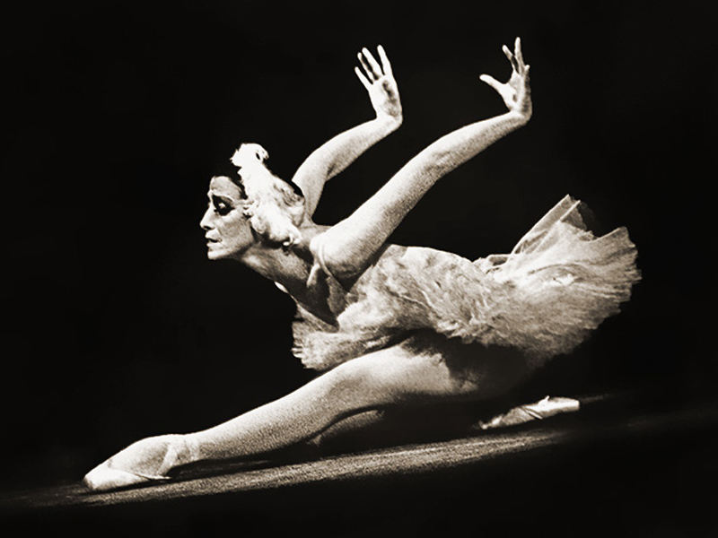
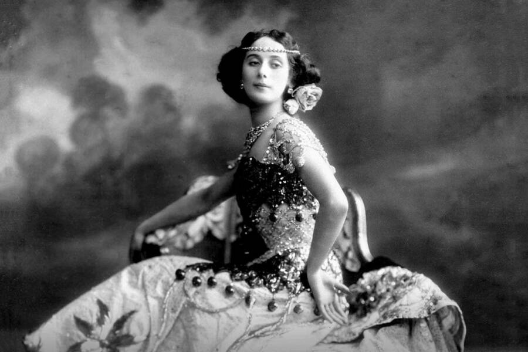

Balet u Rusiji tokom 19. i 20. vijeka prešao je put od uvozne evropske umjetnosti do vodeće svjetske sile koja je redefinisala klasični ples. Tokom 19. vijeka, ruski imperijalni balet doživljava svoj zlatni vijek, najviše zahvaljujući francuskom koreografu Marijusu Petipau. On je u Sankt Peterburgu postavio temelje onoga što danas smatramo vrhuncem klasičnog baleta, stvarajući neprolazna remek-djela kao što su Labudovo jezero, Uspavana ljepotica i Krcko Oraščić, za koja je muziku pisao Petar Iljič Čajkovski. Ruski balet je u ovom periodu spojio francusku eleganciju i italijansku tehničku virtuoznost sa prepoznatljivom ruskom dramatičnošću i emocionalnom dubinom.
Na samom prelazu u 20. vijek, ruski balet doživljava revolucionarnu transformaciju kroz viziju Sergeja Djagiljeva i njegovu trupu Ballets Russes (Ruski baleti). Ova trupa, iako je djelovala uglavnom izvan domovine (posebno u Parizu), šokirala je i fascinirala zapadni svijet spajajući avangardnu muziku, smjelu scenografiju i inovativnu koreografiju. Umjetnici poput koreografa Mihaila Fokina, plesača Vaclava Nižinskog i kompozitora Igora Stravinskog srušili su stroge kanone 19. vijeka. Njihove predstave, poput Posvećenja proljeća i Žar-ptice, unijele su modernizam, sirovu energiju i ekspresivnost, čime je ruski balet trajno zadužio i transformisao modernu svjetsku kulturu.
Nakon Oktobarske revolucije 1917. godine, baletska umjetnost u Sovjetskom Savezu morala je da se prilagodi novoj ideologiji, ali je uspjela da zadrži rigorozne tehničke standarde carske škole. Sovjetski balet, predvođen teatrima Bolšoj u Moskvi i Marijinski (tada Kirov) u Lenjingradu, stavljao je naglasak na herojstvo, atletizam i grandioznost, što je iznjedrilo dramatična remek-djela poput Romea i Julije Sergeja Prokofjeva i Spartaka Aram Hačaturjana.


Sredinom 20. vijeka, tokom Hladnog rata, sovjetske turneje na Zapadu izazivale su senzaciju, a legendarne zvijezde poput Maje Plisecke, te kasnije prebjezi kao što su Rudolf Nurejev i Mihail Barišnjikov, potvrdili su apsolutnu tehničku i umjetničku dominaciju ruske baletske škole na globalnoj sceni.
Umirajući labud video Udžbenik ,, Osnove klasičnog plesa " A. Vaganova na ruskom jeziku